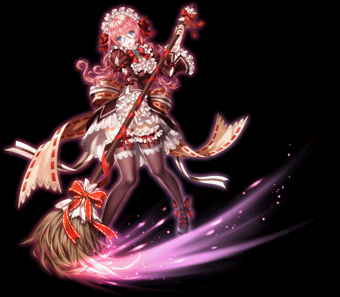
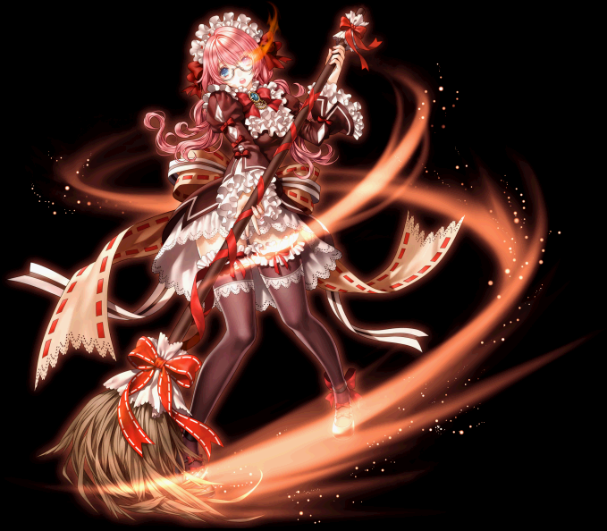

メイド キャラ育成まとめ
通常スキル(2020版)
覚醒スキル(2020版)
マジェスティックサーバント
ルナティックサーバント
アージェントサーバント
その他スキル
おすすめ装備
概要
物理、知識のハイブリで戦うアタッカー。実装当初はストリップドレスの高火力で快適に狩りができたが、現在は大幅に性能が劣化している。
どちらかというと対人よりも狩り向けなスキルが多い。
マジェスティックサーバント
通称知識メイド。知識犬に近い性能をしている。
燃費のわりに範囲・ダメージともに優秀なスキルを連打できる。
補助・パッシブスキルが裏職含めて優秀であり、資産がなくても育成しやすい。
闇恩寵・装備次第ではノーPOT狩りも比較的容易に可能。
一方で火属性のみの狩り方のため、火抵抗の高い敵には弱い。
【黒魔術の加護】
[専用覚醒スキル] [パッシブスキル]
黒魔術師の十字架効果40％適用 適応される十字架の種類は問わないので火属性十字架も使用可能。
【ネープルスダブルウェーブ】 （元：ネープルスウェーブ）
[専用覚醒スキル]
基本的にこのスキルを使えば大丈夫。2回ずつ当たるようになります。
スキルの範囲が固定であるため、スキル装備は不要。属性系・知識にガン振りできる。
900Lvからは領域展開で範囲を伸ばすのもオススメ。
キャラクターが投げた皿の直線方向に火属性ダメージの判定が発生する。覚醒前は1回あたり1Hit、覚醒すると2Hit。
Hit判定には若干癖がある。0.5秒おきに4回判定が発生。近すぎるor遠すぎると1回判定しか出ない場合も。
初回の判定は本体周辺で発生するため、キャラクターの後ろ側にも判定が存在する。
hit毎に魔法致命打・強打の判定がある。
【燃え上がる心】 （元：燃える心）
[共通覚醒スキル]
ネープルスダブルウェーブ使用時に追加ダメージが入る。上記覚醒スキルで2Hitになるので、合計4Hit分のダメージが入る。
主力スキルの火力を上げるのに必須。
【ディベストドレス】 （元：ストリップドレス）
[共通覚醒スキル]
魔法ダメージの属性が装備してる十字架の属性になります
闇十字を付けるとドレスは闇になるがウェーブの属性は火のままなので注意。
覚醒しないほうが強い可能性あり。
一部スキルにて効果が1発しか乗らない。
火ダメージはステータスの知識が増えることで増加します。
ルナティックサーバント
範囲物理スキル「マッドラッシュ」を駆使して戦うビルド。
【紅皿欠皿】
[専用覚醒スキル] [パッシブスキル]
マッドラッシュ・クレイジーラッシュ・スローイングディッシュ・グライドディッシュを使用すると地面に壊れた皿が生成される
この皿の近くでスキルを使うと追加ダメージが発生する。
手数的に微妙。
【クレイジーラッシュ】 （元：マッドラッシュ）
[専用覚醒スキル]
敵の移動速度を低下させる効果がつく
壊れた皿の近くで使うと最終ダメージ増加と皿の追加ダメージが発生。
移動狩りが主流な現環境では微妙。
【アルティメットブルームラッシュ】 （エクストリームブルームラッシュ覚醒）
[共通覚醒スキル]
移動した先に皿があると皿を壊して皿が3つ増える。
増えたところで3つ…？
【グライドディッシュ】 （スローイングディッシュ覚醒）
[共通覚醒スキル]
反射するごとにダメージが10％ずつ増える
モンスターを釣るのに便利。
領域展開で範囲が伸びる模様。
アージェントサーバント
単体向け物理メイド。が、マッドラッシュも普通に使う。
スローイングディッシュで釣ってマッドラッシュで範囲攻撃、残ったのを掃除の邪魔しちゃダメで倒す、という狩り方がおすすめ
【熟練家政婦】
[専用覚醒スキル] [パッシブスキル]
▪ 5%の確率で物理ダメージを与えた時に100%の追加物理ダメージを与えます。
実際にはもう少し確率・追加ダメージが高い模様。
【お掃除の邪魔は絶対に許さない】 （元：掃除の邪魔しちゃダメ）
[専用覚醒スキル]
スタンが付与される。
その他通常スキル
メイドの場合、（特に物理メイドは）パッシブスキルを活用しながら狩りしていくことになる。
【潔癖の乙女】
[パッシブスキル]
回避率上昇。SLv71で最大の8%
ヤティカヌ以降での狩りで便利。
【インサイト】
[リアクション（ON/OFF）スキル]
スキル装備でダブルクリティカルダメージ増加を無制限に伸ばせるスキル。
1秒毎に更新（CP消費）
ダブルクリティカルが出ないと意味がないので、致命打抵抗減少・致命打発動確率OPを積んでからがスタート。
ダブルクリティカル時のダメージが大幅に伸ばせるので、星降る以降の硬い敵を狩る時に重宝する。
【ライフリサイクル】
[パッシブスキル]
最大HPとCPが増やせる。％ではなく＋。
序盤のHP確保に役立つので協会装備のお供に。
【ブルームマスタリー】
[パッシブスキル]
物理ビルドの場合振らない方が良い。
ブルームマスタリーによる強打（ダメ3倍）は対人戦においては致命打抵抗で100%防がれてしまう…。
逆に知識の場合魔法強打は星降る(1380~)以降で役立つ。
【セーブマイマスター】
[パッシブスキル]
敵から攻撃を受けた際に一瞬無敵になり、連続で攻撃を受けずに済む。
序盤～1250Lv辺りまで役立つ。
【ナクリエマの加護】
[パッシブスキル]
運が増やせる。
特にヤティカヌ以降の狩りで便利。
【メイドオブメイド】
これのおかげで低燃費な狩りが実現できる。
ただし難易度５なので序盤で使うのはやや難。
おすすめ装備
黒魔と異なり反転しないため、知識UP装備が使用可能。800DXU・UMUには属性弱化を持つものがあり、弱化を稼ぎやすい。
マジェスティックサーバントのパッシブ効果で十字架が使用可能(ただし効果の40％のみ)。
弱化最大20％(50％弱化使用時)・強化最大48％(120％強化使用時)
致命減少を収容所リッチ全段赤になるくらいの70%まで積めればさくさく狩れるようになる。
目標とする装備はこの辺り。


ステ振り
人によって結構変わるので参考までに。ステは健康運以外すべて無振りでOK。900付近なら知恵を下げて他を近づける感じで。

コラプ装備前は同OPフォックステール
ウポス補助武器前は同OPくびれた腰
首はレドネ前はTスキル雷音
手は夜影から百八 以前はT力タルタス
騎士道コラプ着用前はW敏捷比運比率
指はその時によって変えてます
コラプ着用前はスキル指やら運比指
着用後は力20000行くように力指多めです
狩り編
超越スキルは以下構成。
筋力集中+５ 知恵集中+５ 暴走 領域展開+５
900の時は筋力集中
1000の時は筋力集中 運集中
1100の時は筋力集中 運集中 暴走
まとめ
育成動画
補足
Special Thanks!!
| ・監修 | まおみく 様 |
| ・執筆 | そこらの民衆 |